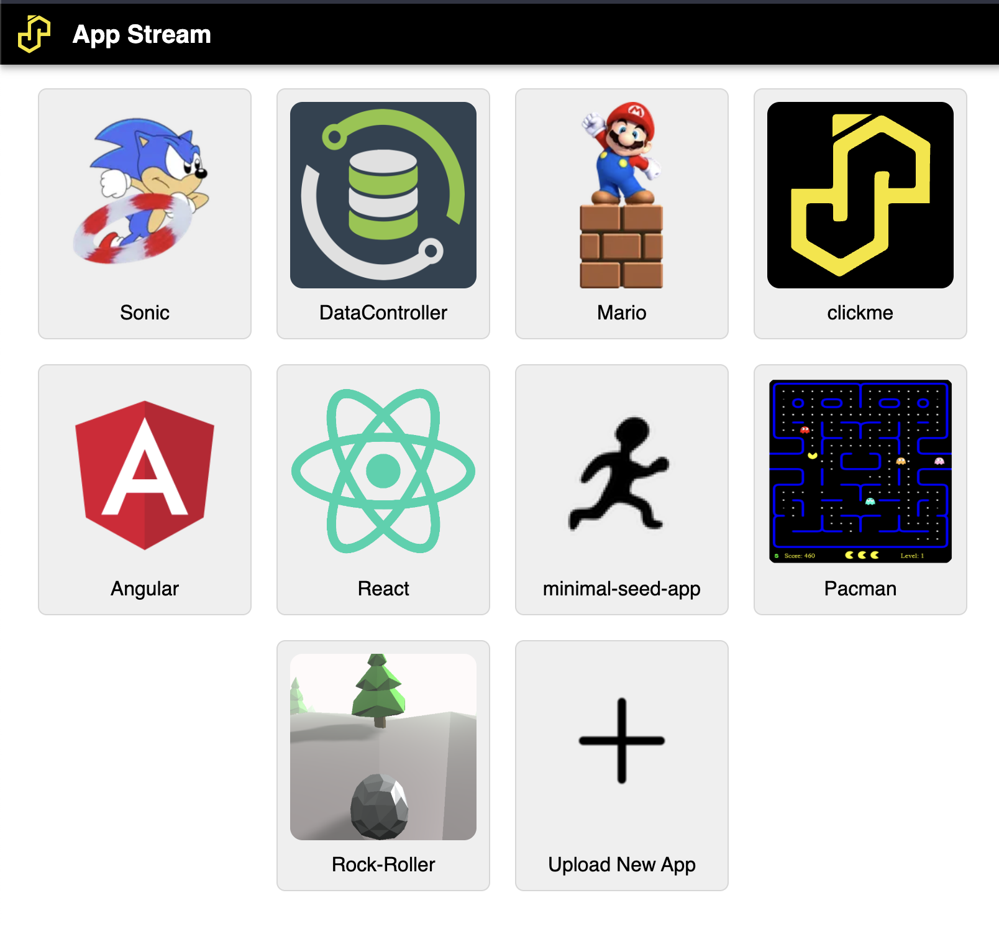

App Stream¶
AppStream is the gateway to apps on SASjs Server.

Creating Apps¶
Anybody can create an app for SASjs Server - it just needs to be compiled using the SASjs CLI. The output of this process is a zip file that can be imported to any SASjs Server instance.
Deploying Apps¶
Simply click the "Upload New App" button and select the local zip file containing the app you wish to deploy.
Alternative deployment approaches include:
sasjs deploy- https://cli.sasjs.io/deploy/- Use the
/SASjsApi/drive/deploy/uploadAPI - Use the
/SASjsApi/drive/deployAPI
Deployment limits¶
A deploy is measured before anything is written, and refused with 413 when the tree is over any of these:
| Limit | Value |
|---|---|
| Entries | 10,000, folders included |
| Total size | 100 MB, decoded |
| A single file | 20 MB |
The refusal names the limit and the figure it reached, for example The file tree exceeds the deploy limit: 10001 entries (maximum 10000). Nothing is written before the checks pass, so a refused deploy leaves the drive exactly as it was.
Sizes are decoded bytes. A file member travels as its own text, or as base64 when it says encoding: "base64" - four characters for every three bytes - so a tree at the total limit with binary members is up to a third larger on the wire than on the drive, and the transport admits that much. POST /SASjsApi/drive/deploy/upload applies the same limits to the tree it unpacks from the archive, not to the archive itself.
Member names are checked in the same pass: a name carrying /, \ or .. would write outside the deployment folder, so the tree is refused with 400 instead.
A file that is not an archive is refused with 400 before it is read, and the refusal names the file and quotes what it holds: The file "server.json.zip" is not a zip archive: it begins with "------formdata-undici-...", where a zip archive begins with the four bytes "PK\x03\x04". A download served under a .zip name is not always one - a release asset uploaded as the multipart body that carried it begins with the form boundary - and an archive that begins with the signature but cannot be read keeps the reader's own reason, attached to the file's name. Both are 400, because the request is what needs correcting. A file that stops inside the signature is refused as what it is, with the number of bytes it holds.
Publishing an app¶
The simplest publish is the compiled frontend itself: a zip of the folder a browser opens, with name giving the app its identity.
# the archive holds what the browser is served - index.html, app.js, assets/logo.png
curl -X POST "https://my-server/SASjsApi/drive/deploy/upload?name=harness" \
-H "Authorization: Bearer ***" \
-F "file=@harness.zip"
The entries become apps/<name> on the drive, and the app opens at /app/<name>/. The name is the app's key, its folder and its address, so it has to be usable as one URL segment - see The app's id, and the name it is known by.
Publishing a frontend and its backend¶
A bundle can carry both halves, and that is what sasjs build writes for a server target:
macrodash.zip
sasjs.app.json {"name": "macrodash", "appLoc": "/Public/app/macrodash"}
web/ the compiled frontend
backend/ the services the frontend calls (optional)
One upload deploys the backend and publishes the frontend:
curl -X POST "https://my-server/SASjsApi/drive/deploy/upload" \
-H "Authorization: Bearer ***" \
-F "file=@macrodash.zip"
- The CONTENTS of
web/becomeapps/<name>, replacing what that folder held: the folder is the container, not part of the app, and the bundle says what it holds. - The CONTENTS of
backend/are written toappLoc, replacing it. The folder becomes what this bundle carries, so a service the new bundle dropped stops being served rather than staying reachable with nothing naming it. sasjs.app.jsonis metadata: it is read before anything is written, and it is never served with the app.
Two frontends can share one backend. Publish each with the same appLoc and a different name: each is its own app with its own id and URL, and neither deploy touches the other's frontend. The backend itself is replaced by whichever bundle carries it, so a shared folder holds the services of the last bundle to deploy there - deploy them in order, and a service lost that way is one DELETE /SASjsApi/drive/file will not find.
The older shape¶
A deployment built before apps were frontends is published with the folder and the stream in the query, and keeps working unchanged:
# the archive holds services/web/index.html, services/web/app.js, assets/logo.png
curl -X POST "https://my-server/SASjsApi/drive/deploy/upload?appLoc=/Public/apps/harness&streamWebFolder=web" \
-H "Authorization: Bearer ***" \
-F "file=@harness.zip"
The archive's structure is kept under appLoc, streamWebFolder publishes that folder as an App Stream app, and streamServiceName sets its label. Such an app is served from <appLoc>/services/<streamWebFolder>, so that is where its entry page lives - the example above holds services/web/index.html - and a request that names streamWebFolder must carry that folder, or it is refused with a message naming it rather than deployed.
A zip that contains a deploy document - a root-level JSON file naming appLoc and fileTree - is read as a document instead, so the route answers both shapes. sasjs.app.json is never read as one, even though it names an appLoc: it is the bundle's own manifest. A JSON file the app itself ships, such as a manifest or a data file, names neither and is deployed with the rest.
Two kinds of entry are dropped, because macOS adds them to an archive of a folder and they are not part of the app: anything under __MACOSX/, and .DS_Store.
The app's id, and the name it is known by¶
A publish gives an app its identity. The first publish of an app mints a UUID, and that id is the app: its URL is /app/<id>/, a removal names it, and a redeploy keeps it - so a new bundle never moves an app's URL. The deploy answer states it as app: { id, name, url }.
For an app published as a frontend the name is the key as well as the label: it is the folder (apps/<name>), the address (/app/<name>/) and what the tile says, so it has to be usable as one URL segment - letters, digits, dot, dash, underscore or tilde, starting with a letter or digit, at most 64 characters, and not apps.json or index.html, which the App Stream answers itself. A publish that states anything else is refused with 400, and one that names an app another app already holds is refused with 409. A rename is therefore a new app: publish under the new name, delete the old one.
A legacy entry is keyed by its folder, and its name is a label and only a label: streamServiceName sets it, two folders may both be called report, and the name is derived from the last segment of appLoc when the publish states none.
The bundle's manifest¶
A bundle may describe itself, in sasjs.app.json at the root of the archive:
{
"name": "Dashboard",
"appLoc": "/Public/app/dashboard",
"logo": "assets/logo.png",
"frameAncestors": ["https://example.com"]
}
name says which app the frontend is and appLoc which backend it calls; both are optional in the file, because the request may state them instead. streamWebFolder states the older shape - a manifest carrying it publishes the legacy way, with the web assets under <appLoc>/services/<streamWebFolder> - and is what an older CLI writes. The manifest describes the app rather than serving it, so it is read and left out of the deployment, and the request wins where both speak: a caller naming a folder, a name or a label is correcting the archive.
Removing an app¶
DELETE /AppStream/<id> - or /app/<id>, which is the same surface - and DELETE /SASjsApi/drive/deploy with { "id": "<id>" } do the same thing: the app stops being advertised and stops being served.
An app published as a frontend is its folder, so unpublishing removes apps/<name> with the entry. A legacy entry's files sit inside a backend folder that may serve other apps, so those are left where they are, and the folder goes with DELETE /SASjsApi/drive/folder by whoever owns the deployment.
Replacing the folder¶
POST /SASjsApi/drive/deploy takes replace: true to write the tree as the folder's whole contents: the folder is removed before the tree is written, so a file the new version renamed or dropped stops being served. An archive upload replaces by default - publishing a frontend means apps/<name> is what the archive says it is - and ?replace=false keeps what is already there.
A package's backend is written on the same terms whichever way replace is set: the bundle carries the folder's contents, so the folder is made to match it.
The removal happens after the tree is accepted, so a request that is going to be refused never deletes anything. A folder can hold more than one published app, and replacing it empties the folder rather than just the app being deployed - so several frontends may name one appLoc, but each deploy of that backend rewrites it and the last bundle to carry it is what the folder holds. Keeping a folder two bundles both write is about deploying them in order, not merging them.
Text and binary file members¶
A file member carries the caller's own text by default. An asset that is not text states encoding: "base64", and its code is base64 of the bytes to write:
{
"members": [
{ "name": "index.html", "type": "file", "code": "<h1>Hello</h1>" },
{ "name": "logo.png", "type": "file", "encoding": "base64", "code": "iVBORw0..." }
]
}
Nothing is guessed from the contents: test and data are both valid base64, so a guess would corrupt short text rather than decode a file. An archive upload marks every entry base64, because an archive holds bytes.
A deploy document written by a client older than @sasjs/api 0.24 states no encoding and carries its files as base64, which this server now reads as text - so such a document has to add encoding: "base64" to each file member. The CLI states it for the assets it builds.
The app's URL¶
An app answers on two URLs.
/AppStream/<id>- the id is a UUID, minted at the first publish and kept when the app is published again, so this URL survives a redeploy./AppStream/<name>- the readable form, which is what a person shares. An app published as a frontend holds its name uniquely, so this address is always available to it. A legacy entry's name may be shared, and an ambiguous one answers404rather than guessing which app was meant.
The id is what the permission model speaks, and it is the handle every removal names. A rename does not exist: an app published as a frontend IS its name, so a new name is a new app.
A streamed build, served from Drive¶
A build made with streamWeb in the target's streamConfig (sasjs web, or sasjs cbd) writes an entry page whose every asset link names the file by path:
/StoredProgram is the web tier this server serves a build from: a browser fetches a filename from it, and the file comes back - one file out of the Drive, typed by its extension, so a page, a script, a stylesheet or a font arrives as itself rather than as bytes. Nothing has to be unpacked or mounted first, which is why a frontend built to name its assets this way can be deployed to the Drive at the appLoc it carries and opened here unchanged.
/StoredProgram answers a second parameter: _program=<path> runs a stored program on the same address. A request naming both _program and _FILE is refused with 400, because the two answer different things, and the refusal names both parameters rather than resolving one over the other. That refusal is one sentence with one copy per side: this server mints it in api/src/routes/setupRoutes.ts as TIER_NEEDS_ONE_PARAMETER, and the mocked host in sasjs/cli (src/commands/build/internal/mockSite/assets/sw.js) answers it verbatim, each pinned by its own spec, so a rewording cannot land on one side alone.
What both parameters share is everything that decides access: the rule on /SASjsApi/drive/file governs them, so a caller who may not read the Drive reads no asset and runs no program, and a path that climbs out of the Drive is refused with 400. A file that is not there answers 202 with Parameter Error and File error rather than a 404, so a missing asset looks the same however it was asked for. Hashed asset names are cached immutably and everything else revalidates, as they are on an app's own route.
Where the assets land is the build's business, not this server's: a target with streamWeb set writes the folder itself and is opened at <server>/StoredProgram?_FILE=<appLoc>/services/<streamServiceName>.html.
One pack, either run time¶
A SASjs Server runs programs as SAS or as JavaScript, chosen by RUN_TIMES. A deployment can carry both: the SAS service services/common/configure and the JS program services/common/configure.js sit side by side under the app's folder, and the run time decides which one runs. A pack built for a server that runs JS - the server target of a SASjs app with its JS mocks in serviceFolders - therefore works on either without a second build, and a browser-hosted site (which is a JS host) runs the same programs.
Securing Apps¶
If you are running in "Server" mode you can grant permissions at the level of User or Group to any uploaded application - just click on your username, then "Settings", then "Permissions", to create the necessary rule(s).
An app's route names its ID, /AppStream/<id>, and the rule has to be written that way even when the URL a person opens shows the name (/app/<name>/): the permission is keyed on the id route, so a rule on /AppStream/macro-dash matches no route and grants nothing.
Available Apps¶
SASjs Server does not have an in-built "app store" (due to our security policy of having no external web requests), however you may download apps yourself from the following locations and upload them to your SASjs Server instance.
Productivity Apps¶
Data Controller for SAS®¶
Data Controller is a full-blown SAS application to provide business users with a carefully-controlled capability to make changes to data in SAS.
The app can be downloaded from here: https://git.4gl.io/dc/deploy/raw/branch/main/server.json.zip.
Documentation is here: https://docs.datacontroller.io.
Seed Apps¶
The following apps are presented as "starter packs" with which you can build your own SASjs App:
Angular Seed App¶
A demo app built using Angular. Builds are published to the releases page.
Minimal Seed App¶
This is a simple demo app built with Vanilla JS and SAS. You can find the latest version on the github releases page
React Seed App¶
The primary template used by the SAS Apps team. Artefacts available on the releases page.
Games¶
The serious part of the game series is that you can see how easy it is to deploy generic web apps to SASjs Server - or any SAS server for that matter!
Macro Dash¶
Bounce through the WORK library, stomp the ERRORs and get the report out before the job runs out of steam. The leaderboard is a set of SAS services, so the game shows the full backend - not just a streamed frontend. Play it at https://dash.sasjs.io; the SASjs Server service pack and the Viya deploy script are on the releases page.
Mario¶
Needs no introduction. Release assets available here: https://github.com/sasjs/mario/releases
Pacman¶
Another video game classic! Release assets are available here: https://github.com/sasjs/pacman/releases
Rock Roller¶
Dodge the trees and move down the slope! Release assets are available here: https://github.com/sasjs/rockroller/releases.